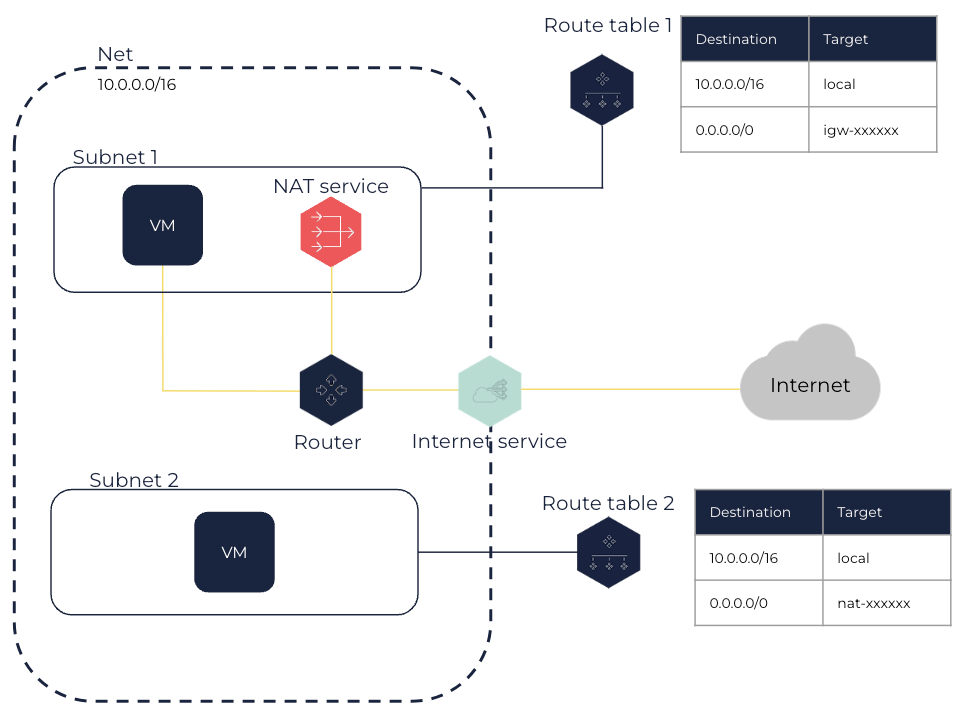

About NAT Services
NAT services enable virtual machines (VMs) in a Net to indirectly connect to the internet through a single public IP.
General Information
A NAT service sends and receives internet traffic on behalf of one or more VMs in a Net. To do so, the NAT service translates the private IPs of the VMs into a single public IP when these VMs communicate with the internet.
|
As you have a limited quota of public IPs for your account, NAT services enable your VMs in a Net to access the internet through a single public IP. For more information about public IPs, see Public IPs. |
A NAT service can have the following states:
-
pending: The NAT service is being created. -
available: The NAT service is ready to forward traffic. -
deleting: The NAT service is being deleted. -
deleted: The NAT service is deleted.
For more information about IP addressing in a Net, see About Nets > IP Addressing and Access to the Internet.
Architecture
A NAT service is created in one Subnet but it can be used by any Subnets of the Net.
To route traffic from your VMs to the internet using the NAT service, you need to add the following routes:
-
In the route table of the Subnet of the NAT service, a route directing traffic from the NAT service to the internet using the internet service as target.
-
In the route tables of the Subnets of the VMs, routes directing traffic from these VMs to the internet using the NAT service as target.

|
In this architecture, ensure the security groups of the VMs contain a rule allowing outbound flows to the internet (either 0.0.0.0/0 or a smaller range of IPs). |
Related Pages